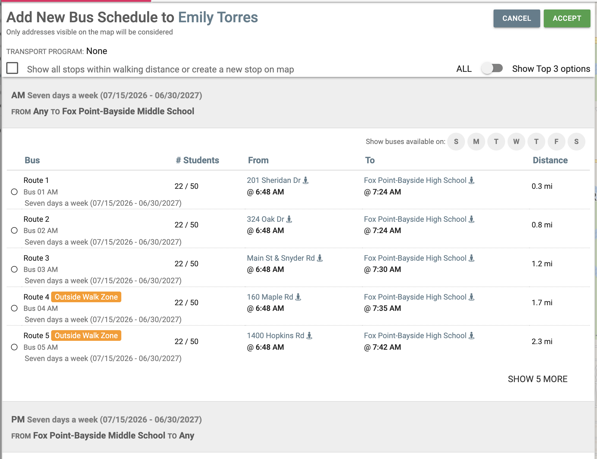

Out-of-zone stops surface on their own
For an unrouted student (whose search runs “FROM Any”), opening Search & Add Bus Schedule now shows the in-zone stops plus the nearest stops beyond the walk zone, filling the visible list automatically. Two changes make it work:
Out-of-zone stops auto-fill the view when in-zone options fall short — instead of being hidden behind repeated “Show 5 More” clicks that flipped an invisible switch.
The gather read stop coordinates from the wrong field, so out-of-zone stops were silently dropped on real data. Fixed — the nearest-stops search now returns results.

Prerequisites (dev)
- ›The ezrd-1180 branch is deployed to the dev tenant you'll test on.
- ›You're logged in with an admin / config role (needed to edit Settings).
- ›The tenant has routes with trips in the active school year (top-right selector). Out-of-zone stops come from trips serving the student's school — a school with no active trips shows nothing.
Shrink the walk zone
Making the walk zone small means most nearby stops count as outside it, so the student has few in-zone options and the out-of-zone list fills the view.
- a.Open the menu (☰, top-left) → Settings → General.
- b.Find “Default Maximum Walking Distance (ft)” and note the current value (default
1000) for Step 5. - c.Change it to a small value — 100 works well.
- d.Click Save (green button, top-left).
Per-grade override: if the student's grade has its own Max Walk Distance (Settings → Grade → that grade), it overrides the default — set it small too, or tick “Use default max walk distance.”
Pick an unrouted student
Only unrouted students take the “FROM Any” (vague) search — the path that surfaces out-of-zone stops. A routed student matches their existing stop exactly and never shows out-of-zone options, whatever the walk zone.
- a.Go to Students (top nav).
- b.Open Filters ▾ → Bus Schedules and choose the unrouted / not-assigned option (or use Advanced Search).
- c.Open a student and confirm the header shows the red Unrouted tag.
Open Search & Add Bus Schedule
- a.On the student record, expand the Bus Schedules section.
- b.Click + SEARCH & ADD BUS SCHEDULE. The panel opens and searches automatically; the header reads “FROM Any TO <school>.”
Verify out-of-zone stops auto-appear
- ✓Pass: the AM (and PM) section shows rows tagged Outside Walk Zone without clicking anything (like the screenshot above).
- •SHOW 5 MORE pages through additional out-of-zone stops; the ALL / Show Top 3 toggle changes how many show initially.
- ✗Regression (old behavior): out-of-zone rows appear only after clicking SHOW 5 MORE, and the first view is bare or “NO ROUTE FOUND” despite nearby stops — means the fix isn't in effect.
Restore the walk zone
Don't leave the dev tenant with a tiny walk zone — it changes routing behavior for everyone on it.
- a.Settings → General → set “Default Maximum Walking Distance” back to the noted value (default
1000) → Save. - b.Revert any per-grade override you changed in Step 1.
- Setting didn't take effect? Config is cached ~10 minutes server-side. A save should apply to the next search; if not, wait a couple minutes and search again.
- No “Outside Walk Zone” rows at all? Most likely the student is routed (needs an unrouted student — Step 2), the school has no active trips in the selected year, or the walk zone wasn't lowered/saved.
- Rare: view looks under-filled but nothing auto-appears. The auto-fill triggers on in-zone stop count; a student with several nearby stops that don't produce rows may need one “SHOW 5 MORE” click. Not a failure — click once.
- Units: the field is feet on imperial tenants (meters otherwise). 100 ft ≈ 30 m.